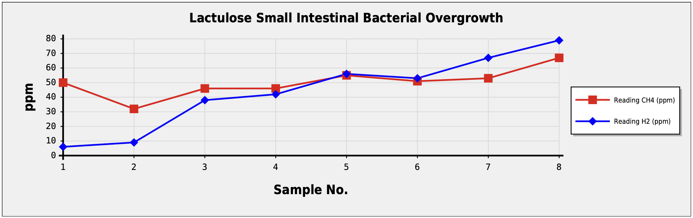
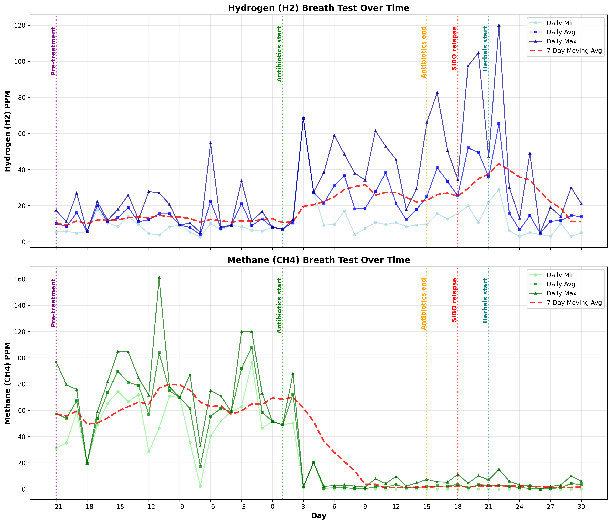

Disclaimer: I am not a medical professional. This is my personal 20-year journey with digestive health issues. What worked or didn’t work for me should not be taken as medical advice. If you are experiencing health issues, please consult qualified medical professionals who are knowledgeable about SIBO and IMO.
Background Link to heading
I spent 20 years being told I have Irritable Bowel Syndrome (IBS), a diagnosis that never fitted the full picture. In September 2025, I finally discovered what was actually happening: I tested positive for both Small Intestinal Bacterial Overgrowth (SIBO) and Intestinal Methanogen Overgrowth (IMO). After successfully treating IMO but experiencing SIBO rebound within days, I am now self-treating SIBO with herbal protocols. Whilst the journey is far from over, I wanted to document how I got here.
This is arguably a cautionary tale about the limitations of “diagnosis by exclusion” and the importance of persistence when something doesn’t feel right. I’ll be honest - symptoms have been affecting my overall life, some of my work and especially my family. If you’re reading this because you’ve been living with similar unexplained digestive issues, I hope my experience might provide some useful insights.
Where it all started: Australia, 2005 Link to heading
In late 2005, I took a 7-week trip to Australia and New Zealand. Towards the end of the trip, after scuba diving and staying on a boat for a few days at the Great Barrier Reef near Cairns, things began to go wrong. I developed hives on my chest and joints, followed by blood in my stool and significant fatigue and weakness. I was administered oxygen on the flight home - not exactly how you want to end a holiday.
What followed were symptoms that would become frustratingly familiar over the next two decades: bloating, flatulence, acid reflux, occasional dizziness and fatigue. The kind of fatigue that makes you wonder if you’ve developed some exotic parasitic infection from your travels.
First diagnosis: IBS, 2007 Link to heading
Back in the UK, where I lived at the time, I had my first colonoscopy in 2006. The results were inconclusive - the bowel wasn’t fully cleared, and they mentioned something about a “long bowel”. Not particularly illuminating. In 2007, a doctor suggested it was IBS, specifically IBS with constipation. I was essentially told to manage the symptoms through diet and get on with life. I saw a clinical dietitian who prescribed eating certain types of food and fibres and advised to reduce coffee intake.
For several years, I tried to do just that. The symptoms would wax and wane, sometimes better, sometimes worse. I learned to avoid certain foods - red meat, duck and MSG (think: Indian dinners in London…) caused spectacular flatulence and smells. Garlic and tomatoes would trigger bloating, stomach soreness, acid reflux, often within 15-60 minutes - even insomnia could follow. Constipation became a regular companion with 4-5 days of no action at times.
The active years and their slow decline Link to heading
Through the late 2000s and into the 2010s, I remained quite active despite the symptoms. I ran marathons and half-marathons up until 2018/19. Looking back, I suspect the wellness and routine helped manage some of the symptoms.
But around 2014, a new symptom emerged that would prove more debilitating: fatigue, occasionally accompanied by brain fog. The fatigue was peculiar in its timing - it would hit especially hard after lunch and sometimes after dinner. The post-lunch episodes were often the most impactful because the afternoon could be spent occasionally in a daze.
Later, in the 2020’s, this pattern would start happening in the morning for 1-2 hours after getting up.
I saw a couple of GPs about the fatigue, starting in 2014. Their response was remarkably consistent: fatigue is often not diagnosed and I should basically learn to live with it. Blood tests were relatively normal, but no further investigation was undertaken. Not particularly encouraging when you’re struggling to stay awake at your desk whilst running an IT consulting business.
The 2019 flare-up: a glimpse of something more Link to heading
In 2019, things escalated significantly. I developed hives on my joints again, reminiscent of the 2005 episode. This time, they were accompanied by fatigue, cramps, soreness and flu-like symptoms with joint pains and lasted for several months. During this period, I also experienced occasional brain fog and slight dizziness.
This prompted my second colonoscopy with a gastroenterologist in a private hospital in Ireland. Unlike the first inconclusive examination, this one found something: aphthous ulcers and inflammation, including inflammation of the ileocecal (IC) valve - the valve between the small and large intestine. Finally, some objective findings.
However, the doctor took over two years to provide a formal conclusion after several prompts, eventually putting it down to… IBS again, in 2022. The ulcers and inflammation were apparently not significant enough to warrant more tests, a different diagnosis or treatment approach.
I was sent on my way with a low FODMAP diet sheet. The symptoms eventually eased but, needless to say, the diet never quite resolved anything and I eventually stopped. I just avoided the foods I already knew to be triggers and later I added things like Nutella and artificial enhancers/preservatives such as Sulphites to this list. Not from any particular process but rather from the symptoms I would experience overnight or the day after. I also used Movicol.
2020: blood markers and iron deficiency Link to heading
In the second half of 2020, blood tests showed elevated C-reactive protein (CRP) - a marker of inflammation - and iron deficiency with low serum iron and transferrin saturation. I was frequently fatigued. These tests were never repeated until 2025, when they had normalised. I can’t help but wonder what might have been caught if there had been more systematic follow-up.
During this period, I was also diagnosed with asthma in 2018 (after breathing tests due to frequent chest infections), mild-to-moderate sleep hypopnoea in 2021, and rhinitis with post-nasal drip in 2023 following a bout of vertigo. Looking at the list now, I can see a pattern of inflammatory and respiratory issues that may not have been coincidental.
My activity levels declined further. My partner noticed the change particularly from 2023/2024 - someone who used to run marathons could now barely negotiate himself out the door to walk the dog at lunch.
2025: the year everything came to a head Link to heading
Between mid-May and late October 2025, I lost over 10kg due to symptoms, lack of appetite and starting a low FODMAP diet in early July. The diet took six weeks before I saw any constipation improvements in late August, but there was little improvement to other symptoms. As of writing (late October), I remain on the low FODMAP diet, awaiting consultation with my dietitian about gradually reintroducing foods.
In June 2025, a sample found VTEC DNA (a pathogenic E. coli strain) and elevated calprotectin at 265 (normal is < 50). By July, the VTEC DNA had cleared, but calprotectin remained elevated at 68. I’d also tested positive for ANA (antinuclear antibodies) at a titre of 1:160, which can indicate autoimmune activity. My GGT and cholesterol had been mostly elevated over the past seven years. The inevitable question from doctors was “do you drink a lot of alcohol?” to which the answer was always a firm “No!”, I really don’t.
Additional symptoms had developed: a metallic taste on the tip of my tongue every day since May, foul breath (according to my partner), occasional greasy skin and acne. When stomach symptoms were bad, the tinnitus intensity increased considerably. The symptoms could keep me awake for an hour or longer at night, or wake me up to five times per night.
In June 2025, a skin prick test showed I’d developed allergies to silver birch, trees, mould and grass pollen - a test in 2018 had been negative. Even my immune system seemed to be changing.
The breakthrough: SIBO and IMO testing Link to heading
Frustrated with the lack of answers, in August 2025 I began extensive research using Claude AI to explore how my symptoms might fit various diagnoses. After countless hours asking questions from different perspectives, SIBO emerged as a strong possibility. My clinical dietitian also mentioned SIBO and H. Pylori as potential causes.
Not knowing I could self-refer for a breath test in Ireland, I purchased the FoodMarble Aire 2 device which measures methane and hydrogen in breath. When I received it on 8th September and took my first test, the results were striking: methane constantly elevated at 50-100ppm (reaching 150ppm post-meal) and hydrogen around 20-30ppm.
I shared these results with the dietitian, who recommended getting an official breath test through GastroLife for medical recognition. Fortunately, GastroLife had an appointment available the next day. Two working days after the test, the results confirmed SIBO and IMO:

The chart should be read as follows:
- You are asked to breathe into a balloon at 0 min, then drink a Lactulose (or Glucose) solution, breathe into a new balloon again at 30, 45, 60, 75, 90, 105 and finally 120 min (total of 8 tests).
- I drank Lactulose. Lactulose is a synthetic disaccharide - or sugar - that does not occur in nature. The human small intestinal mucosa does not have the enzymes to split lactulose, so it passes unchanged through the small intestine where bacteria (if SIBO/IMO is present) ferment it, producing hydrogen and methane gases
- When bacteria ferment lactulose in the small intestine, the hydrogen and methane gases produced are absorbed across the intestinal lining into the bloodstream, transported to the lungs and exhaled in the breath where they can be measured - this is the basis for breath test diagnosis
- For Hydrogen (H2) the test should be read as follows: For Lactulose >= 20ppm rise over baseline within 90 minutes is considered positive (mine was 47-50ppm over baseline of 6ppm at 90 minutes and rose to 73ppm over baseline at 120 minutes)
- For Methane (CH4) the test should be read as follows: >= 10ppm at baseline or at any point during the test is considered positive for methanogenesis (mine started at baseline 50ppm and rose to 67ppm at 120 minutes)
For me personally, drinking the solution resulted in major activity in my stomach, gurgling, cramp, a feeling of being unwell as well as much increased tinnitus intensity. This lasted a couple of days.
After 20 years of being told I had IBS, a functional - not organic - diagnosis that essentially means “we don’t know what’s wrong with you, but it’s probably not serious” - I finally had a specific, testable diagnosis.
SIBO (Small Intestinal Bacterial Overgrowth) occurs when bacteria that normally live in the large intestine colonise the small intestine inappropriately. According to Cleveland Clinic, this can cause bloating, abdominal distension, constipation or diarrhoea, fatigue and malabsorption of nutrients - leading to deficiencies in vitamins and minerals that affect energy levels and overall health.
IMO (Intestinal Methanogen Overgrowth) is the excessive growth of methane-producing archaea (single-celled microorganisms) in the gut. Research from Cedars-Sinai shows that these archaea produce methane gas which slows intestinal transit, directly contributing to constipation. Patients with IMO commonly experience bloating, constipation, abdominal pain and flatulence.
The inflamed IC valve found in my 2019 colonoscopy now took on new significance. Research published in the World Journal of Gastroenterology shows that IC valve dysfunction is strongly associated with SIBO - when the valve fails to maintain adequate pressure, bacteria from the large intestine can reflux backwards into the small intestine. A dysfunctional valve may explain not only how SIBO develops but also why it persists or recurs even after antibiotic treatment.
Suddenly, everything made sense: constipation (methane slows gut motility), bloating and flatulence (bacterial fermentation), fatigue and brain fog (bacterial metabolites affect energy and cognition), and symptoms worsening after meals (more food = more fermentation).
The diagnosis didn’t answer every question - the elevated GGT, the autoimmune markers, gallbladder polyps, the new-onset allergies - but it provided a framework that IBS never had.
A concerning consultation: when evidence meets resistance Link to heading
In late September 2025, armed with my breath test results, I attended a consultation with a gastroenterologist at a public HSE hospital. The encounter was deeply troubling.
She became visibly angry that I had taken a SIBO breath test with GastroLife and was presenting the results to her. The hospital, she stated firmly, only practises “evidence-based medicine” and doesn’t recognise such breath tests. She also didn’t recognise IMO as a diagnosis. The irony was difficult to miss - GastroLife’s testing protocols follow the North American Consensus on hydrogen and methane breath testing, published in the American Journal of Gastroenterology in 2017, which established standardised, evidence-based criteria for diagnosing SIBO and IMO using breath tests. The consensus states clearly that breath testing is “a useful, inexpensive, simple and safe diagnostic test” for these conditions.
I had brought a 3-page brief summarising my 20-year history and listing questions at the end. I managed to deflate the situation and as we went through it together - she read it whilst I tried to clarify along the way - her demeanour changed. It was at this point that she seemed to realise her hostile behaviour was unwarranted and that I was simply a patient looking for answers after two decades of symptoms. To her credit, she eventually apologised for the outburst.
She then prescribed rifaximin and neomycin - but suggested taking them in sequence rather than in parallel. According to published research, including a 2010 study showing 85% clinical response rates, these antibiotics should be taken together (rifaximin 400mg three times daily plus neomycin 500mg twice daily for 10 days). Her prescription was for two tablets daily of each - below the evidence-based dosing.
I raised concerns about neomycin’s well-documented ototoxicity, particularly given my existing tinnitus and history of vertigo. Neomycin is known to have a toxic effect, with potential hearing damage that is typically permanent. I suggested metronidazole as an alternative, which many gastroenterologists routinely prescribe instead of neomycin. She dismissed this concern entirely.
The encounter highlighted a broader issue: the HSE and also the private sector and some of its gastroenterologists (at least 2 that I visited) appear not to be keeping pace with evolving diagnoses (both SIBO and now IMO has been recognised in gastroenterology literature for years) or current treatment protocols. When a patient presents with published research and legitimate test results, the response should arguably be engagement with the evidence, not dismissal.
I decided to hold off on treatment. I had an appointment scheduled for early October at a private hospital in Dublin with an associate professor of gastroenterology for a second opinion. After this HSE consultation, waiting seemed the prudent choice.
A different kind of consultation: complexity acknowledged Link to heading
In early October 2025, I attended my appointment at the private hospital with the professor, bringing along my now well-used 3-page brief summarising my 20-year history, symptoms, test results and questions.
Her response was immediate and markedly different from my previous experience. She recognised straight away that I was a “quite complex” case. However, she was frustrated that I hadn’t sent the brief and supporting test results in advance. I explained that had I known this was an option (the first time any doctor took this approach), I would have provided everything beforehand. With the complexity of the case, she needed time to review everything properly rather than trying to digest it all during the consultation.
Despite the short consultation, she quickly reviewed some of the documentation and made what seemed like a pragmatic assessment: “I guess we start by treating you for SIBO and IMO and then we see what’s left to treat.” It was a refreshingly straightforward approach - address the confirmed diagnoses first, then reassess to see what symptoms remained and what might require further investigation. She put me on rifaximin and metronidazole, both 3 tablets a day.
She promised to review all the documentation thoroughly and issue a letter outlining her diagnoses, further tests and treatment protocols. This systematic approach felt like progress after 20 years of fragmented care.
Four weeks on from that consultation, I am yet to receive the letter. I contacted her secretary two weeks after the appointment, and was told that the letter is still being worked on - that my case is “quite complex”. Whilst the delay is frustrating, I can appreciate that a thorough review of two decades of medical history, multiple test results and interconnected symptoms takes time. The acknowledgement of complexity is, in itself, a form of validation that my experience has previously lacked.
When the cure feels worse than the ailment Link to heading
Following the consultation early October, I began the prescribed treatment: rifaximin and metronidazole, both three times daily. The professor had switched me from the sequential dosing to parallel administration and prescribed metronidazole.
What followed was arguably the most challenging fortnight I’d experienced in this 20-year journey.
Within 2 days, the side effects started. By day three, I was experiencing what the SIBO community calls “die-off” - the reaction as bacteria are killed and release toxins. Extreme fatigue set in, accompanied by dizziness and brain fog so profound that basic tasks felt like wading through molasses.
By day seven, the symptoms had escalated. Whilst my tinnitus had initially dropped to the lowest level in perhaps 15 years - a brief glimpse of what treatment success might feel like - it then spiked dramatically. I developed tingling in my hands and cold extremities, cognitive issues and anxiety. My blood pressure, normally around 120/78, jumped to 160/95. The sensation in my head felt profoundly wrong.
On day eight, I had enough. After another largely sleepless night, I asked my partner to drive me to the private hospital emergency department. I tried to explain the constellation of symptoms and a sense that something was seriously wrong.
The emergency doctor’s response was deflating. Blood tests showed nothing alarming. In a roundabout way, he made it clear he felt I’d wasted his time, finishing the consultation with “I hope to never see you again” - a statement with an unmistakable dual meaning. Whilst I understood his frustration, I hadn’t known what else to do. The side effects were well beyond what I’d anticipated and I’d received no guidance on what to expect during treatment. The rifaximin had come with no information sheet, the pharmacist hadn’t discussed side effects and the prescribing doctor stated that discussing food timing and side effects was “the pharmacist’s job”.
Reassured - in a strange way - that nothing immediately serious was happening, I continued treatment but reduced the metronidazole to twice daily from three, trying to find a tolerable balance between treating the overgrowths and maintaining basic function.
Over the following week, symptoms gradually improved. By day 12, I was starting to feel much more lucid.
Looking back on those two weeks of antibiotic treatment, the phrase “the cure was worse than the ailment” feels apt. The lack of proper medical guidance, the dismissive attitude when complications arose highlighted how poorly understood and supported SIBO/IMO treatment remains within conventional medical practice.
The last 3 days of the treatment followed by 2 additional days, were probably some of the best days I’ve experienced in years from a cognitive perspective. My head was bursting with energy and there was no tiredness evident post-lunch/walk. It was extremely invigorating even if the body was still recovering from the onslaught.
Then, on day 18, a new challenge emerged: SIBO rebound. IMO was gone according to the Aire 2 device, but SIBO hydrogen readings climbed dramatically - peaking at 120ppm. The severe fatigue and brain fog returned with a vengeance. Acid reflux and constipation intensified, the metallic taste returned and I developed constant thirst. It appeared the bacteria were recovering, undoing the antibiotic progress.
Unable to contact the professor for guidance, I resumed my research into herbal protocols with proven medical and scientific research to develop an alternative treatment approach.
The herbal protocol: a self-devised approach Link to heading
Before describing the protocol, I should address why I proceeded without medical supervision.
I was in a desperate situation. The SIBO rebound was severe - hydrogen readings hit 120ppm and the debilitating fatigue and brain fog had returned with a vengeance. I couldn’t reach the professor; her secretary confirmed she needed more time to complete her comprehensive letter. Having just endured two weeks of side effects - including the ED visit, blood pressure spike and cognitive issues - only to have the condition rebound days later, I felt I had no other viable options.
I did a risk/benefit assessment: herbal protocols with established safety profiles in published literature versus continuing deterioration and misery. The herbal approach gave hope and was a low-risk option to me. Every component was supported by peer-reviewed research, not pseudoscience.
This was a last resort, not a first choice. Self-treatment of a complex medical condition is not ideal, but it reflects the reality some patients may face when they need urgent guidance and the medical system cannot provide it in that timeframe.
Faced with partial antibiotic treatment failure and no access to timely medical support, I developed my own herbal protocol based on research into SIBO management and motility restoration. I started this treatment on day 21 with admittedly low expectations.
But the results were remarkable. On day 23, my thirst and metallic taste disappeared, brain fog lifted and hydrogen readings crashed from 120ppm to 29ppm. On day 24, bacterial die-off hit hard with migraine, dizziness and significant nausea lasting until lunch, prompting me to skip berberine for the rest of the day. Day 25 saw hydrogen levels spike to 49ppm then crash to 5ppm after continuing NAC and berberine.
I admit I’m generally sceptical about “herbal remedies”, but this research-backed regimen has produced profoundly positive results. Much of the brain fog has disappeared. Whilst I still experience some fatigue and dizziness after taking tablets, the improvement has been dramatic.
I have created a chart that clearly shows the Aire 2 readings per day both pre-treatment and during treatment with relevant annotations:

The herbal course included several components:
Dietary modification Link to heading
Aside from continuing on the low FODMAP diet, I reduced daily carbohydrate intake from my usual 225g to 175g, substituting with increased protein and healthy fats. The rationale was simple - reducing the carbohydrates available to hydrogen-producing bacteria might help starve the overgrowth whilst maintaining adequate nutrition.
Ginger for motility (500mg, 3x daily) Link to heading
Ginger supplementation aims to restore the Migrating Motor Complex (MMC) - the wave-like contractions that sweep through the small intestine between meals, preventing bacterial accumulation. Research using gastroduodenal manometry has shown that ginger enhances motility response to meals. Since MMC dysfunction is linked with SIBO development, restoring this “intestinal housekeeper” function is fundamental to long-term management. I took one tablet half an hour before breakfast and dinner, and one before bed - an indefinite protocol aimed at re-establishing normal motility patterns.
NAC as biofilm disruptor (600mg, once daily) Link to heading
N-acetylcysteine serves a different purpose - disrupting the protective biofilms that bacteria create to shield themselves from antibiotics and immune responses. A systematic review demonstrated that NAC both inhibits biofilm formation and destroys established biofilms, significantly promoting antibiotic penetration to deeper layers. I took 600mg half an hour before breakfast for a planned 4-6 week course, aiming to break down bacterial fortifications before the antimicrobials attacked.
Berberine as natural antimicrobial (500mg, 2x daily) Link to heading
Berberine became my primary antimicrobial agent. The BRIEF-SIBO trial is investigating whether berberine is as good as rifaximin for SIBO treatment, using 800mg daily dosing. I opted for slightly higher dosing at 2 x 500mg daily with meals for 4-6 weeks per suggested dosage on the container. Unlike broad-spectrum antibiotics, berberine appears to selectively promote beneficial bacteria whilst reducing pathogenic overgrowth.
Saccharomyces boulardii for gut healing (3x daily with meals) Link to heading
This probiotic yeast became my gut restoration agent. Unlike bacterial probiotics, S. boulardii is unaffected by antibiotics and can be taken alongside antimicrobial treatment. Research shows it works through multiple mechanisms: binding and eliminating pathogens, producing antimicrobial compounds, strengthening the intestinal barrier and modulating immune responses. Studies specifically examining SIBO found that S. boulardii reduced bacterial overgrowth and improved digestive symptoms whilst restoring intestinal microbiota. I planned a minimum 4-6 week course, potentially continuing long-term given its safety profile.
This protocol represented a fundamentally different approach - addressing not just bacterial overgrowth but also the underlying motility dysfunction that allows SIBO to develop and recur.
Resources and costs Link to heading
Testing costs (Ireland, 2025) Link to heading
- GastroLife breath test: €190
- FoodMarble Aire 2 device: €225 (less online discounts)
Herbal supplement costs (Ireland vs. Germany, 2025) Link to heading
It pays to shop around, especially when buying in bulk.
Here is a pricing example comparison as of October 2025 for the herbal protocol components from Holland & Barrett Ireland and Amazon.de:
Ginger Root (500-550mg):
- Holland & Barrett Ireland: Ginger Root 1100mg, 120 capsules - €17.59. Note: 1100mg dosage, take one capsule for ~550mg dose
- Amazon.de: Bio Ingwer Ginger Capsules - Organic - 300 Capsules - 600mg per Capsule - €18.95
NAC (600mg):
- Holland & Barrett Ireland: N-Acetyl Cysteine 600mg, 30 capsules - €13.00
- Amazon.de: Raibu NAC 800 Capsules High Dose (200 Capsules x 800 mg) I NAC Acetyl L-Cysteine - €19.95
Berberine (1000mg):
- Holland & Barrett Ireland: New Nordic Sugar Cut Berberine 60 Tablets (400mg per tablet) - €35.09
- Amazon.de: Bandini Berberine 1000 mg Pure High Dose | 180 Vegan Capsules (500mg per capsule) - €21.15
Saccharomyces boulardii:
- Holland & Barrett Ireland: (not available, can be found in some Irish health shops)
- Amazon.de: Swiss BioEnergetics - Saccharomyces Boulardii 5 Billion CFU 90 Capsules - €19.97
SIBO/IMO breath testing in Europe Link to heading
- GastroLife (Ireland) - Self-referral available, lactulose and glucose breath tests, €190
- Nordic Clinic (Scandinavia) - Clinics in Denmark, Sweden, Finland, Iceland, Portugal and Spain offering SIBO breath tests with glucose or lactulose
- Sibolab (Germany) - Founded 2015, first German SIBO specialist lab, home test kits, ships to EU (€9.99 shipping outside Germany)
- Genova Diagnostics Europe (UK) - SIBO profiles available across Europe, lactulose breath test measuring hydrogen and methane
A note on European resources Link to heading
I have found no dedicated European patient advocacy groups specifically for SIBO/IMO. Most support exists through general digestive health charities (like Guts UK) or international online communities. The BRIEF-SIBO clinical trial mentioned in this post is investigating berberine vs rifaximin in China, but I found no active European SIBO/IMO trials.
Conclusion Link to heading
This blog post is intentionally not complete and I plan to make future material updates.
Here are the key takeaways from my journey:
- Trust your Gut (pun intended). If there’s one thing I’ve learned from these 20 years, it’s this: trust your body when something doesn’t feel right. Don’t stop asking questions when answers don’t fully fit the symptoms. Sometimes “IBS” is just the beginning of the story, not the end. Claude is a really powerful researcher and is well worth the monthly subscription while you research, undergo diagnosis and treatment
- Don’t waste time on doctors or consultants who won’t help you find a proper, holistic diagnosis for your symptoms. Some will gaslight you, suggesting it’s all in your head or that you should simply “learn to live with it”. Others will be outright dismissive or hostile when you present research or test results they’re unfamiliar with. I understand that cynicism and scepticism creep into medical practice - consultants see many patients and perhaps develop a defensive posture - but this is no excuse for fobbing people off or becoming hostile when confronted with their own gaps in knowledge. Your time, health and wellbeing are too valuable to spend years with practitioners who aren’t listening. If a consultant becomes angry at you for seeking answers, that’s a sign to move on, not a sign that you’re wrong
- If you have symptoms that resemble SIBO or IMO - chronic bloating, constipation or diarrhoea, fatigue, brain fog, food intolerances - consider getting a breath test. In Ireland, you can self-refer to GastroLife without needing a GP referral.
- If the breath test comes back positive, or if you have significant food intolerances, I recommend getting the FoodMarble Aire 2 device (or similar) for ongoing monitoring. It measures hydrogen and methane levels in your breath and allows you to track patterns, log symptoms (fatigue, bloating, constipation), record food intake with built-in low FODMAP scoring and even record sleep quality. This data becomes invaluable for identifying food triggers and measuring treatment progress - I used it during my journey and it provided objective evidence of what was working and what wasn’t
- Based on the Aire 2 device, I found that reducing carbohydrates in my meals - compensating instead with protein and fat for calories - helped me keep bacterial growth to a minimum during herbal treatment as it reduced the daily ppm scores consistently and considerably. I personally targeted 175g of carbohydrates a day, down from a “normal” target of 225g
- Make sure to approach any self-diagnosis or self-treatment with appropriate caution and medical oversight. My journey has involved numerous consultations, second opinion and extensive research. What I’m documenting here is my experience, not medical advice.